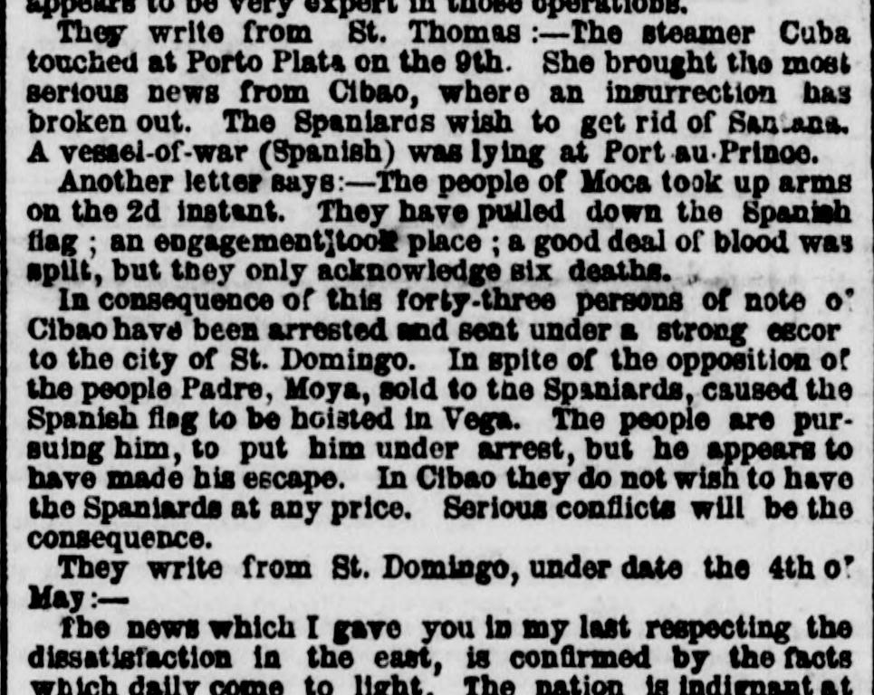
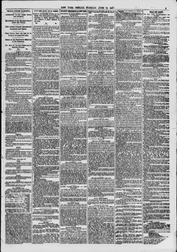

See the full pageVer la página completaIn consequenoe of this forty-three persons of note o' Clbao haveEn consecuencia de esto, cuarenta y tres personas de nota del Cibao han
Based on the provided newspaper excerpt, forty-three notable persons from Cibao were arrested and sent under escort to St. Domingo, while Padre Moya hoisted the Spanish flag in Vega despite public opposition and subsequently escaped the pursuing populace. The nation is described as indignant over being sold and betrayed through annexation, with unarmed citizens struggling in Moca following disarmament, a movement resulting in seven persons being shot in Azua, and reinforcements requested from Porto Rico. Consequently, Spain finds herself engaged in an unforeseen labyrinth of trouble stemming from the annexation.A tenor del extracto de prensa, cuarenta y tres personalidades destacadas del Cibao fueron arrestadas y enviadas bajo escolta a Santo Domingo, mientras que el padre Moya izó el pabellón español en La Vega a pesar del rechazo popular y luego logró huir de la multitud que lo perseguía. La nación se describe consternada e indignada por verse vendida y traicionada mediante la anexión, con ciudadanos desarmados resistiendo en Moca tras el desarme forzoso, un estallido que dejó siete personas fusiladas en Azua y peticiones de refuerzos a Puerto Rico. Por consiguiente, España se encuentra atrapada en un imprevisto laberinto de dificultades derivado de la anexión.
FULL TEXT:TRADUCCIÓN:
They write from St. Thomas:—The steamer Cuba touched at Porto Plata on the 9th. She brought the most serious news from Cibao, where an insurrection has broken out. The Spaniards wish to get rid of Santana. A vessel-of-war (Spanish) was lying at Port-au-Prince.Escriben de Santo Tomás: —El vapor Cuba tocó en Puerto Plata el 9. Trajo las noticias más serias del Cibao, donde una insurrección ha estallado. Los españoles desean deshacerse de Santana. Un buque de guerra (español) estaba anclado en Port-au-Prince.
Another letter says:—The people of Moca took up arms on the 2d instant. They have pulled down the Spanish flag; an engagement took place; a good deal of blood was spilt, but they only acknowledge six deaths.Otra carta dice: —El pueblo de Moca tomó las armas el 2 del corriente. Han derribado la bandera española; tuvo lugar un encuentro; se derramó bastante sangre, pero solo reconocen seis muertes.
In consequence of this forty-three persons of note of Cibao have been arrested and sent under a strong escort to the city of St. Domingo. In spite of the opposition of the people Padre, Moya, sold to the Spaniards, caused the Spanish flag to be hoisted in Vega. The people are pursuing him, to put him under arrest, but he appears to have made his escape. In Cibao they do not wish to have the Spaniards at any price. Serious conflicts will be the consequence.En consecuencia de esto cuarenta y tres personas notables del Cibao han sido arrestadas y enviadas bajo una fuerte escolta a la ciudad de Santo Domingo. A pesar de la oposición del pueblo el Padre, Moya, vendido a los españoles, hizo que la bandera española fuera izada en Vega. El pueblo lo está persiguiendo, para ponerlo bajo arresto, pero parece haber hecho su fuga. En el Cibao no desean tener a los españoles a ningún precio. Serios conflictos serán la consecuencia.
They write from St. Domingo, under date the 4th of May:—Escriben de Santo Domingo, bajo fecha del 4 de mayo: —
The news which I gave you in my last respecting the dissatisfaction in the east, is confirmed by the facts which daily come to light. The nation is indignant atLas noticias que les di en mi última respecto a la insatisfacción en el este, son confirmadas por los hechos que diariamente salen a la luz. La nación está indignada con
The New York Herald. New York, June 25, 1861. Page 5.